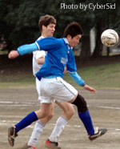
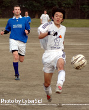

Sun March 20th 2005. OiFuto Swiss vs. Geckoes on the day before the big Charity Tournament. Both teams seemed to be missing a few players but it didn't make the
game any less intense.
|  |
Captain kirk of Swiss keeps a tight rein on Geckoes' Kazu Kikuchi. |
The 2 teams had only played to a draw 3 weeks earlier in the Cup and were pretty familiar with each other. The Geckoes strength lay with a solid
back four, some Latin creativity in midfield, and the big Japanese striker and speedy Englishman up front. The Swiss counter with no real standouts but a lot of movement
and overlapping from defense and midfield which can open holes up if your midfielders don't stay with their man.
The Swiss had been frustrated in the recent draw after dominating the first half only to see it slip away with a
very strong comeback by the Geckoes and some sloppy defending. This time, the Swiss opened up the
first half in similar fashion, scoring after only 5 minutes with converted striker Mori receiving a through ball from Krando, beating 2 defenders and slipping it by the keeper.
5 missed chances and 15 minutes later, Karl Hahne smashed in a volley following a Suzuki corner to make it 2-0. What followed for the rest of the first half seemed like a replay of the previous game with the Swiss
seeing chance after chance go wide or being well saved by the keeper. Mori, Suzuki, Dave Spiers, Ogata, Karl all had one on one's with the keeper or shots go off the bar. It was really one way traffic with Kirk &
Trevor shutting down Kazu Kikuchi for the Geckoes, Dave Spiers doing a job on the Geckoes pony tailed dribbler (Jonathan Rodriguez), and the midfield opened up the slower Geckoes defense.
|  |
Takahisa Suzuki blasts another shot wide of target, keeping the score down to a reasonable number! |
When Karl out runs the center back of the opposition, you should be worried. First half ended 2-0 with the Geckoes keeper making some strong saves and some woeful shooting by the Swiss attackers leaving them
wondering if this league game was going to produce a similar result as the Cup match.
Fortunately for the Swiss, in spite of an improved effort by the Geckoes in the 2H, the intensity level held up and it was more of the same. There were numerous one on one chances for Suzuki, Mori, Karl, even
Michael Schall. Karl was even given the opportunity to cement his name as the designated PK taker but the keeper stopped it and the duties fall to the next player.
The Geckoes did have some counter attacks and did produce some corners but none resulted in a shot on goal. The most dangerous moment for the Swiss was when Uchida, the fill in keeper, tried to dribble around the
opposing forward and almost lost it (ala Rene Higuita). In the end, Ogata was able to dribble around the keeper and slot home from close range and Karl banged one off the keeper for 2 more goals.
It should have been more but a lack of finishing practice is clearly showing up on Match day for the Swiss. Final result 4-0. Man of the match for the Geckoes - the keeper, a standout in both of our recent matches.
Man of the match for the Swiss - Mori who created numerous chances in his new position up front.
Cap'n Kirk |